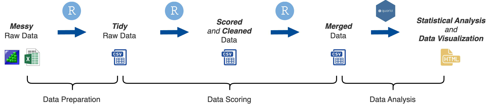

1 Overview
Data Processing
How We Do Research
We make use of large data collection efforts where we recruit 300-500 people to participate in multiple 2-3 hour sessions and perform up to 40+ cognitive tasks. A single large data collection effort will contain multiple research projects and publications.
For instance, in one of our recent data collection efforts (2020-2022) we recruited 461 participants for 5 2.5-hour sessions in which they completed 42 cognitive tasks. Multiple publications have resulted from this data collection effort with several more in the works:
Burgoyne, Seeburger, and Engle (2024) . Modality Matters: Three Auditory Conflict Tasks to Measure Individual Differences in Attention Control
Burgoyne et al. (2023) . Nature and Measurement of Attention Control
Draheim, Tsukahara, and Engle (2023) . Replication and Extension of the Toolbox Approach to Measuring Attention Control.
OSF BOAT: See a description and full list of publications and projects to result from this data collection effort on OSF.
Data Organization Challenges
There are several challenges to working with data from these large data collection efforts
Large number of tasks: Data from 40+ tasks need to be processed, scored, and cleaned.
Different combination of tasks: The multiple research projects and publications will use a different combination of tasks, with a core set of tasks common across most of our projects (e.g., fluid intelligence, working memory capacity, and attention control).
Different criteria and decisions: Different decisions and criteria how to process, score, and clean the data might be made across the multiple research projects and publications.
Different “final” data files: Because of the above challenges, we can end up with different subjects and values even for common sets of tasks across projects.
Poor documentation and lack of reproducibility can undermine our ability to deal with these challenges
Solution to Challenges
Simply using R is not enough
Document steps and aim for full reproducibility
Keep projects, data files, and scripts well orgainzed
Reproducibility
Open science priniciples are becoming the norm in the field. Open access to data and scripts is a part of that. Once we have published a study, we host all our data and scripts on OSF.
OSF: Attention & Working Memory Lab
Are data and scripts truly open access and reproducible if they are unorganized and hard to understand?
Project organization is often overlooked at the expense of “just getting it done” because it takes more time and forethought to organize a project. However, the “just getting it done” approach can lead to a lot of unintended consequences:
Inefficient Workflow: Disorganization can lead to a chaotic workflow where significant time is spent locating files, understanding what each script does, and figuring out the correct order of operations for running analyses. This inefficiency can drastically slow down the research progress.
Time Inefficiency: Researchers may waste significant amounts of time searching for files, data, or specific pieces of code within a disorganized project. This inefficiency can extend project timelines and delay the dissemination of findings.
Increased Errors: A lack of organization can lead to more mistakes. This is because it’s easier to lose critical pieces of code or overlook important updates to scripts. It is also harder to go back and check your work to make sure things were done correctly.
Difficulty in Scaling the Project: As projects grow, the lack of initial organization can make it much more difficult to scale up. This can limit the scope of the research or lead to significant restructuring efforts down the line.
Barriers to Revising Analysis: Research often requires revisiting and revising analyses as new data comes in or as hypotheses evolve. A lack of organization can make it difficult to update analyses or integrate new data seamlessly, stifling the dynamic nature of research.
Challenges in Publishing and Sharing: When preparing research for publication or sharing with the broader scientific community, a well-organized project simplifies the process of compiling results, data, and methods. An unorganized project can impede these efforts, delaying or even jeopardizing publication.
Reproducibility Issues: Without clear organization, reproducing the results of a project can become nearly impossible, both for the original researchers and for others who may want to build upon the work. This undermines the credibility and utility of the research.
The thing is, simply using R does not get around any of this. In fact, sometimes it can exacerbate it because of the extra cognitive demand faced when writing code. This extra demand can make the “just getting it done” approach more tempting. So what is the solution?
The solution is to slow down and give some thought to the organization of your project and it’s reproducibility.
Frontloading effort saves future headaches.
Part of the scientific process involves carefully documenting every step in our procedures. Doing so not only ensures higher quality research, but also enables your future self and others to fully reproduce what you did, go back and analyze the data in a different way, or catch errors in the data analysis process. Without a fully reproducible project, it may be difficult or impossible to catch errors that were made.
What does reproducibility mean?
Reproducibility means that all data processing and analysis steps can be fully reproduced using only the original raw data files and the execution of the R scripts. There are different levels of reproducibility (I made these up):
Partially reproducible - only some data processing and analysis steps can be reproduced, which may be due to a lack of original raw data files, the “just get it done” approach, or the use of proprietary and non-reproducible software.
Minimally reproducible (acceptable) - all data processing and analysis steps can be reproduced on any research team members computer without any modifications needed.
Moderately reproducible (desired) - meets the minimal level plus other people not involved in the research project can reproduce the steps with minimal modifications.
Highly reproducible (good luck!) - fully reproducible without major modifications needed by people not involved in the research project 5 - 10+ years from now.
A minimal level of reproducibility is still acceptable, as achieving more requires significant time and effort. We should strive for a moderate amount of reproducibility but achieving it requires more than just writing code. Your code must be organized, easy to understand, and include notes and documentation. Even if you or someone else attempts to reproduce your steps in the future, they can modify the code to make it work. The highest level of reproducibility is difficult to achieve due to software and code updates. Your code may only work with the current version of R or other packages. There are solutions to this problem of software and code updates, but who knows if those will work in the future!
Simply using R for data analysis does not guarantee that your workflow is reproducible. In fact, there are many non-reproducible ways to use R. To ensure at least a moderate level of reproducibility, consider the following criteria (this is not an exhaustive list):
Your statistical analysis (the final step) can be fully reproduced from the raw data files and your R scripts
Your code can be reproduced on other computers without any modifications
Your data and R scripts are organized and documented in a way that makes them easily understandable
This last criterion is extremely important, but is often overlooked. If others cannot understand your workflow, then it is not moderately reproducible. Therefore, it is important to take the time and think about the organization of your project, files, data, and scripts.
How We Process Data

There are three stages of processing and analyzing data in our lab
- Data Preparation: Convert messy raw data files into tidy raw data files
- Data Scoring: Calculate aggregate scores, clean data, remove outliers, and more
- Data Analysis: Perform statistical analysis and visualize data
All the steps in our data processing workflow can be fully reproduced with only the original raw data files and R scripts.
We will cover these steps in the following chapters.
Compile Raw Data
Data is collected locally on running room computers in the lab, each with individual subject files for every session and task. The data is organized by session/task on each of these computers but we need to organize the folders just by /task and to also compile the data from all the computers in one location.
We use a copy_to_drive.R script to compile the raw data from all the computers onto a Network Drive.
You can find a template for the copy_to_drive.R script file on the Network Drive